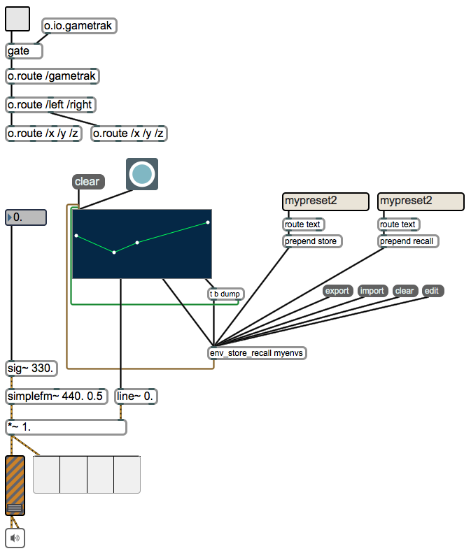

CNMAT Max/MSP Summer Workshop 2012
Lab Assignment 4
August 24, 2012
Summary
In section 1 of this lesson, you will use the tool for managing envelopes that you worked on in lesson 3 to
shape the amplitude envelope of a simple Frequency Modulation (FM) synthesizer. In section 2, you will
load soundfiles into buffers and play them back, adjusting the speed of playback and loop
points.
Topics
Data storage and recall, envelopes, sound file buffers and playback.
Objects Introduced
[buffer~ ] , [info~ ] , [loadmess ], [loadbang ], [key ], [select ], [groove~ ] , [sig~ ] , [line~ ]
Relevant Tutorials
Basic
-
1.
- Data Collections
MSP Topic
-
1.
- Routing Signals
-
2.
- A Review of Fundamentals
-
3.
- Additive Synthesis
-
4.
- Vibrato and FM
-
5.
- Frequency Modulation
-
6.
- Playback with Loops
-
7.
- Sampling Review
-
8.
- Viewing Signal Data
-
9.
- Oscilloscope
1 Envelopes
We will use the envelope tool you built yesterday to control the amplitude of the FM synthesizer in
today’s exercise.
-
1.
- Copy the the envelope management system (“env_store_recall”, along with all of its
supporting objects) that you made in the previous lesson and paste them into today’s patch
(lesson_4_fm.maxpat).
-
2.
- Read in the text file containing the envelopes you created by sending [env_store_recall ] an
message. Make sure you verify that the file was loaded correctly by sending the message
to [env_store_recall ].
-
3.
- Create a [button ] object, and connect its outlet to the inlet of the [function ] object.
-
4.
- Create a [sig~ ] object, and connect its outlet to the first inlet of [simplefm~ ] .
-
5.
- Connect the 2nd outlet (from the left) of the [function ] object to the left inlet of a [line~ ]
object.
-
6.
- Connect the left outlet of the [line~ ] object to the right inlet of the [*~ 1.0] ( [times~ ] ) object just
above the [gain~ ] object at the bottom of the patch.
-
7.
- Now turn on the audio by clicking on the speaker icon at the bottom of the patch and slowly
turn up the volume.
-
8.
- Click the [button ] connected to the inlet of the [function ] object. The volume of the FM
synthesizer should now be controlled by the shape of the envelope.
Your patch should now look roughly like this:

1.1 Extra
For those of you who make it through the first part of the assignment easily, try the following extra
tasks:
-
1.
- Use the [key ] object in conjunction with the [select ] object to control the envelope with the
space bar.
-
2.
- The FM synthesizer has three parameters controlled by signals in the three inlets. These parameters
are, from left to right, the (1) carrier frequency (the pitch), (2) harmonicity ratio (controls
how consonant or dissonant the tone is) (3) modulation index (controls the brightness
of the tone—similar to the effect of adding [tanh~ ] to our synthesizer in lesson 2).
Add envelope control to the three parameters discussed above. (HINT: you will need to scale the
output of the [line~ ] object appropriately for each parameter.)
-
3.
- Add a message to scale the duration of the envelopes in the [function ] object. Check the help file
of the [function ] object to see what message you can use to change the length of the
function.
-
4.
- Rewire the patch so that one of the parameters of the Gametrak controls the position in the
envelope (i.e., /x the position of the joystick, for example, might represent the position along the
x-axis of the [function ] object.
2 Sound file playback with [buffer~ ]
-
1.
- Open the patch called lesson_4_sampling.maxpat.
-
2.
- Start by creating a [buffer~ ] object and give it a name as its first argument, e.g.
[buffer~ sound1] . This name is the name by which other objects will access the sound file that
the [buffer~ ] contains.
-
3.
- Send the [buffer~ ] the message—an open file dialog will appear that you can use to
navigate to a sound file. Choose a short sound file in either AIFF or WAV format (there are
short sound files in the CNMAT MMJ-Depot in the media/audio directory).
-
4.
- Double-click on the [buffer~ ] object—a small window showing the waveform should open
up. If the window is empty, check the Max window for errors.
-
5.
- Now, we need to tell the [groove~ ] object to refer to your [buffer~ ] . This can be done
by either changing the first argument of [groove~ ] to the same name as the buffer, or by
sending [groove~ ] the message where <buffername> is the first argument of the [buffer~ ] .
-
6.
- Now, turn the audio system on by clicking on the speaker icon at the bottom of the patch
and slowly bring up the [gain~ ] slider.
-
7.
- [groove~ ] requires two things in order for it to play back a sound that it is referring
to:
-
(a)
- the speed of playback (as a signal), and
-
(b)
- the point in the sound file from which to start (a message).
A signal object [sig~ 1.0] has already been connected to [groove~ ] for you—this is the speed of
playback. Now, connect a message box to [groove~ ] and send it the message
. You should hear
the entirety of your sound file played at “normal” speed.
-
8.
- Referring to the [groove~ ] help file if you need to, see if you can figure out how to make the sound
play back at twice the speed, or at half the speed.
-
9.
- Use the Gametrak to control the speed of the playback.
2.1 Starting from the middle of the file
Now we would like to start playing from the middle of the file. In order to do that, we need to know the
length of the sound file in milliseconds.
-
1.
- Start by creating an object called [info~ ] that refers to your [buffer~ ] (see step 5 in the
previous section).
-
2.
- Open the help file for [info~ ] to see what the different outlets do. Note the one that tells us
the duration of the sound loaded into the [buffer~ ] to which the object refers. Back in your
patch, connect a number box to that outlet and send [info~ ] a bang. You should now see
the duration of your buffer in the number box.
-
3.
- We now have the duration of our sound file—see if you can finish wiring up the patch so that
you can start the sample playback from anywhere you like.
2.1.1 Extra
-
1.
- Use a [multislider ] to set the start point in the sample. Have the [multislider ] output values
from 0–1 by changing the range in the inspector, and then multiply by the total duration of
the sound file in milliseconds.
-
2.
- Use one of the parameters from the Gametrak to set the start position. (HINT: since the
Gametrak is constantly sending out values, you will have to store them and trigger them with
something, e.g. the space bar, or the mouse.).
2.2 Looping
[groove~ ] has the ability to continually play a section of a sound file indefinitely. The middle and right
inlets control the loop start and stop points.
-
1.
- Take two [multislider ]s and have them output values from 0–1 and scale them by multiplying
their output by the duration of the sound file in milliseconds.
-
2.
- Now send [groove~ ] the message followed by . The sound file should now be looping
over the two loop points you have set.